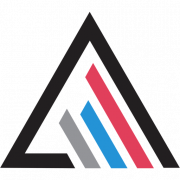

- 1.4.1
- 1.3.3
- Alpha Labs De-FeedbackDownload na akkoord met de voorwaarden op hun site1.1.4Uitgebracht 12 jun 2026
Wijzigingen
- Fixed more CPU usage issues on Mac. Made level meter stay permanently, further updated how the plugin license ties to the machine. Minor bug fixes, UI changes. Added an entry field for "optional info" during activation for specific use cases involving inventory tracking (contact us for details). Increased the strength range, so that what is now 80% was the old 100% setting.
- cntrlld ClearVoxAlleen macOS (VST3 en AU), beta0.5.36Uitgebracht 15 nov 2026Wat is nieuw
Wijzigingen
- Live and Live+ take more of the room, the ambience and the PA away around the voice, and keep the voice as open and natural as the mic.
- Live uses about 30 % less CPU per insert.
- Stability improvements.
- 0.56.3Vorige versie 0.56.1Uitgebracht 25 nov 2026
 d&b ArrayCalcInloggen met eigen account vereist12.10.0Uitgebracht 20 okt 2026
d&b ArrayCalcInloggen met eigen account vereist12.10.0Uitgebracht 20 okt 2026- d&b R1 Remote ControlInloggen met eigen account vereist3.48.1Uitgebracht 21 okt 2026
- DAD DADman (Core 256)DADman-software en drivers voor de Core 256; downloaden na inloggen bij DAD5.8.2.2Uitgebracht jan 2026
 Dante ControllerMac-versie kan een nummer achterlopen4.18.1.2Vorige versie 4.18.0.11Uitgebracht 15 jul 2026Release notes
Dante ControllerMac-versie kan een nummer achterlopen4.18.1.2Vorige versie 4.18.0.11Uitgebracht 15 jul 2026Release notesWijzigingen
- N/A (patch release)
- Dante Controller v4.18.1
- CS-2180 / ETS-6807: Can’t enroll devices into DDM from DC 4.18
- CS-2012 / ETS-6058: Preset doesn’t load with Codec parameter
- CS-2090/ ETS-6529: Preset doesn’t load with Clock Priority parameter
- CS-2166 / ETS-6583: Tx channel label in XML file causes load preset error
- 2242.4Uitgebracht okt 2026
- 2242.4Uitgebracht okt 2026
- 2242Uitgebracht jun 2026
- 2242Uitgebracht jun 2026
- 2242Uitgebracht jun 2026
- 2242Uitgebracht jun 2026
- 2242.4Uitgebracht okt 2026
- 2242Uitgebracht jun 2026
- 2242Uitgebracht jun 2026
- 2242Uitgebracht jun 2026
- 2242Uitgebracht jun 2026
- 2242Uitgebracht jun 2026
- 2242Uitgebracht jun 2026
- 3.02Uitgebracht 16 apr 2026
- 1.32Uitgebracht 16 apr 2026
- 1.42Uitgebracht 16 apr 2026
- 2.26Uitgebracht 16 apr 2026
- 1.33Uitgebracht 16 apr 2026
- 4.13Uitgebracht 25 jun 2026
- 2.06Uitgebracht 16 apr 2026
- 2.13Uitgebracht 16 apr 2026
- 5.2.2Uitgebracht 23 apr 2026Handleiding
Wijzigingen
- Complete refresh of the DECT monitor functionality
- Fix stride monitor behaviour with multiple monitors in the config
- Added warning to message center when the log file can't be opened at the location chosen by the user
- Update all branding to match Green-GO's company styles
- Update the EULA
- Add check before updating firmware version, all devices need 5.2.1 before updating to 5.2.2
- Fix styling and layout issues in quickstart wizard
- Joining device popup waits for the device to fully connect before allowing to join
- Pool wizard size is now usable on smaller screens
- Device audio level indicator now scales correctly with the application size
- Fix 4wire user GPIO settings stuck on previous setting
- Muting the speaker dim now correctly shows up as being muted in Control
- Only allow clearing and rebooting of devices when they are connected to the current config
- Navigate to the dashboard just created
- Don't shorten channel names in channel list
- Allow identifying a Bridge device from the sidebar
- Add optional date to clock element in dashboard
- Fix opening the tech pincode modal twice when pressing return
- iLok License ManagerLicense Support-installer, macOS 10.14+ en Windows 10+ (64-bit)Nieuwste
- 2026.2.1Uitgebracht jul 2026
Wijzigingen
- This release pack supersedes the May 21, 2026 release pack, bringing various improvements and issue fixes, and solving performance and stability issues when using large sessions.
- LA Network Manager 2026.2.1
- No new features since LA Network Manager 2026.2:
- New CS1 enclosure sets and factory layouts for LA12X and LA7.16(i) amplified controllers.
- Possibility to connect streams from Milan-AVB talkers implementing Milan 1.3 specification.
- When loading a Soundvision file, in case 4-channel amplified controllers driving the same type of enclosure have unused output channels, the empty channels are automatically filled with the corresponding factory preset.
- When loading a Soundvision file, polarity settings are now imported in LA Network Manager.
- Added shortcut C key to open Autoclimate in the Tuning page.
- Refer to the Read Me file or the LA Network Manager Help for more details.
- 2026.4Uitgebracht okt 2026
Wijzigingen
- Soundvision 2026.4 is the last release to support macOS 10.15 (Catalina).
- New features in Soundvision 2026.4:
- Soundvision now fully supports Apple Silicon, leading to improved performance and better stability on Mac.
- An array of four L1 and one L1D loudspeaker enclosures is created by default when adding an L1 source.
- Added K2-BAR for L2(D).
- Added Feature Overview document to the L-Acoustics website to further describe how Autofilter works.
- Refer to the readme file and the Soundvision Help for more details.
- Lake ControllerAlleen Windows8.1.7Vorige versie 8.1.6Uitgebracht 9 dec 2025
- 2026.3.0Vorige versie 2026.2.2Uitgebracht 9 okt 2026Volledige changelog
Wijzigingen
- Fix: Fixed issue with hang on mac
- Improvement: Added OSC address /GlobalSnapshots/Update [snapshot name]
- Fix: Some VST3 plugins crashed on windows during load
- Luminex AraneoDownload via aanmeldformulier (versie handmatig)1.11.0
- Meyer Sound CompassVoor Galaxy en CAL met Milan AVB4.16.0Uitgebracht 3 mrt 2026
- Meyer Sound Compass 3.12For systems using Galileo and Callisto processors. Not compatible with macOS starting with Sonoma (macOS 14).3.12.1Uitgebracht 9 jul 2017
- 1.26.1Uitgebracht 7 okt 2026
- 3.0.3Vorige versie 2.5.3
- NoMachinePersonal Edition; voor inkomende verbindingen is een abonnement nodig10.2.3
- PK Sound .dynamicsVersie volgens de handleiding; download na registratie bij PK Sound (Windows en macOS)1.14.0
- PMC6-2 firmwareAlleen voor PMC6, PMC6-2, PMC8-2, PMC8-2 SUB en PMC8 SUB (niet voor Master36); installeren via SoundAlign1.1.1.4Uitgebracht 13 nov 2025
Wijzigingen
- Improved responsiveness of EQ graph
- Improved stability for XBD systems
- Illuminated logo returns to white when SoundAlign is closed
- Fix sorting order of speaker list
- Fix preset ‘Load from File’ function
- Fix issue where firmware updates would only be applied to the master speaker in an XBD system (applies to future updates)
- Fix issue where some speakers could emit low-level pink noise during firmware updates (applies to future updates)

Prism Sound Titan Control & driversControl app, firmware en drivers voor Titan (ook Atlas en Lyra)Mac 2.1.6Windows 2.1.5Uitgebracht 19 aug 2025- 5.6.5Vorige versie 5.6.4Uitgebracht 28 okt 2026Release notes
Wijzigingen
- fixed: A regression in 5.6.4 that could cause QLab to crash when trying to manage tool tips.
- fixed: When deleting a cue list or cart, the workspace will now ensure that a remaining list is correctly selected.
- fixed: The Art-Net tab of the Workspace Status window now remains responsive when looking for Art-Net nodes on a slow network.
- fixed: A bug that could cause QLab to crash when the light definition chooser was visible in the light settings.
- fixed: A number of performance improvements when editing workspaces.
- Download Latest Version
- Version
- 5.6.5
- Release Date
- October 28, 2026
- Requirements
- macOS 11 or later
- ← 5.6.4
- Previous version
- Rational Acoustics Smaart SuiteDownload via je Smaart-account9.6.4Release notes
Wijzigingen
- Fixed a bug with the command bar
- 7.86Uitgebracht 13 nov 2026Changelog
Wijzigingen
- Packages
- support new .ReaperPkg file format, allowing easy install/uninstall of JSFX/Extensions/Scripts/etc
- Take markers
- add 'Edit take marker' to context menu
- add item mouse modifier to insert take marker with length via drag
- support assigning click/doubleclick to set take marker color
- support autoscroll when editing take marker position/length via drag
- support mouse modifier mapping click to Edit
- fix drawing glitches at extreme zoom levels with very long item lengths
- preserve timing when on MIDI items and project tempo changes
- when length specified, tint background for duration of marker
- Render
- avoid mid-render reset with some CLAP plug-ins
- disable some unnecessary multi-core optimization when rendering a single file at a time
- do not delete any files when canceling dry run render
- fix dithering (7.83 regression)
- Configuration import/export
- show sizes of files
- allow resizing windows
- VST3
- fix for some plugins that load saved I/O configuration incorrectly
- possible fix for crash with some plugins when reconfiguring I/O
- Batch converter
- support converting .RPP files when preference enabled to show converted file progress
- Default theme
- fix color and HiDPI bugs for volume label when infoBlock visible
- FX
- obey hidden FX folder when generating FX list from script/quick-add menus and FX browser has not been opened
- FX browser
- don't change folder selection after scanning for new plugins
- RME TotalMix FXVoor alle RME USB-interfaces2.10Uitgebracht 22 okt 2026
- RME USB driverMac (DriverKit, macOS 11+) en Windows 10/11 (x64 en Arm) voor Fireface UFX III, MADIface USB en Digiface DanteMac 4.34Windows 1.0.33Uitgebracht 22 nov 2026
- Shure Wireless WorkbenchShure vraagt bij downloaden om je gegevens7.9.0Vorige versie 7.8.3Uitgebracht 6 okt 2026Alle versies en release notes
Wijzigingen
- Improvements
- Updates the app to link to our End User License Agreement on shure.com and adds a link to our new Data Use License Agreement.
- Adds additional filter ranges for Sound Devices ARX2, ARX8, ARX16, and ARX32 receivers.
- Bug Fixes
- ID-10801: When swapping frequencies with ADTD/Q, the frequencies do not update properly, and it creates a frequency conflict. Fixed since WWB7.8.1, seen since WWB 7.5.0.
- ID-10055: Resolves an issue where the frequency field is empty in the Inventory Sidebar for ADXR devices after changing RF Band and reopening the sidebar without applying changes first. Seen since WWB 7.5.0.
- ID-14259: Resolves an issue where battery errors are not displayed properly in Timeline or captured in Timeline System Events. Seen since WWB 7.5.0.
- ID-10855: Resolves an issue where the count of selected TV channels in the TV exclusions dialog box was incorrect after changing the radius value and searching again. Seen since WWB 7.6.0.
- ID-13808: Resolves an issue where the red overlay does not appear in Timeline in the RF antenna plot after toggling the channels for ANX4 (ULX-D mode), ULX-D, QLX-D, and SLX-D devices when no transmitter is present. Seen since WWB 7.6.1.
- ID-15867: Resolves an issue where WWB's analytics did not capture the Operational Preset for AD PSM systems. Analytics like this help us to understand how many customers use each mode of our products so that we can improve Wireless Workbench for you. Seen since WWB 7.4.0.
- ID-14452: Resolves an issue where text in the scan file recovery dialog box is cut off. Seen since WWB 7.8.0.
- ID-15963: Resolves an issue where a file called 'debug.log' was generated in certain instances. Seen since WWB 7.8.0.
- ID-14837: Resolves an issue where Wireless Workbench would become unresponsive while scrolling through a long list of channels recording in timeline. Seen since WWB 7.8.1.
- ID-14694: Improves coordination behavior for ANX4 when channels are set to Auto antenna mode.
- ID-15976: Resolves an issue where duplicate AD PSM channels appear in the inventory after closing and re-opening a show file when in Narrowband, Spatial Diversity mode before the device comes online again. Seen since WWB 7.8.2.
- ID-15965: Resolves an issue where a receiver with Access Control enabled and locked is hard to see in the Scan sidebar without hovering over the row with the mouse. Seen since WWB 7.8.2.
- ID-15928: Resolves a potential security issue related to unsanitized text handling within Wireless Workbench.
- ID-15853: Resolves an issue where Wireless Workbench would not consistently report a hot battery status for ADXR portables. Requires AD PSM firmware 1.4.13 or later.
- ID-15846: Resolves an issue where a frequency marker on the plot can be moved around even if a frequency is locked in the coordination workspace. Seen since WWB 7.8.2.
- ID-14961: Resolves a security issue where an attacker might be able to manipulate memory or expose values otherwise meant to be hidden in certain scenarios.
- ID-14937: Resolves an issue where Wireless Workbench does not properly report when an ANX4's firmware is invalid by placing an asterisk (*) after the firmware version. Seen since WWB 7.8.2.
- ID-14807: Resolves a crash where Wireless Workbench would crash on device discovery. Seen since WWB 7.8.2.
- ID-14731: Resolves an issue where ADXR battery errors are not displayed in the AD610 connections tab. Seen since WWB 7.8.2.
- ID-15946: Resolves a crash when Timeline is running for extended periods with 120 channels as well as many channel strips are shown. Seen since WWB 7.8.3.
- ID-15915: Resolves an issue where text related to analytics in the Preferences dialog was cut off in certain circumstances. Seen since WWB 7.8.3.
- ID-15911: Resolves a crash when changing the operational preset on ADPSM transmitters while deployment is in progress.
- ID-15908: Resolves a crash caused by a race condition.
- ID-15888: Resolves an issue where Wireless Workbench would crash on launch. Seen since WWB 7.8.3.
- Known Issues
- ID-14603: WWB7 may hang (become unresponsive) when attempting to exit in scenarios where network devices are repeatedly power cycled.
- Soundtheory Gullfoss LiveEén installer voor alle Gullfoss-edities, ook Live (iLok vereist)1.12.1
- Nieuwste
- VLC media playerMac universal (Intel en Apple silicon), Windows 64-bit3.0.24Uitgebracht 22 sep 2026Nieuws
Wijzigingen
- VLC 3.0.24 is a major security update, with over 130 security fixes across VLC and its bundled libraries. It upgrades FFmpeg from 4.4 to 8.1.2 and updates 49 third-party libraries. New features include ATRAC decoding, CEA-708 captions in MP4, SRT listener mode and NV12 DirectShow capture on Windows. This release also fixes slow Windows startup when Daylight Saving Time changes and a MIDI playback crash on macOS 26 and later. More details on the release page. Security advisories will be updated a few days after the release.
- Waves SoundGrid QRecGratis; installeren via Waves Central16Uitgebracht 5 jan 2026
- Yamaha DM Editor (DM7)Offline editor voor DM7 en DM5; download na inloggen bij Yamaha en akkoord met de licentie2.0.1